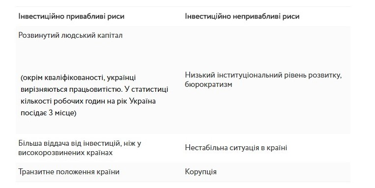

В наш час все важливішим для успіху українського підприємства стає інноваційна діяльність. Проте, саме інноваційна діяльність щільно пов'язана з виникненням ризиків. Інновація діяльність – ризикова діяльність. Оскільки інноваційний ризик не завжди є виправданим, а частіше навпаки, є негативним явищем для підприємств, оскільки несе великі збитки. Серед усіх ризиків інноваційної діяльності, фінансові ризики є основними, оскільки ставлять під загрозу подальшу успішну діяльність підприємства.
Рис1. Інвестиційні риси України
